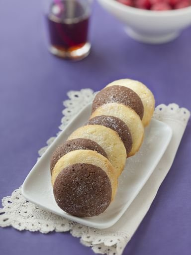

Biscuits au chocolat
Ingrédients
50×
- 150 g de chocolat
- 115 g de beurre ramolli
- 70 g de sucre en poudre
- 2 œufs
- 225 g de farine
- sucre glace

Préparation
Étape 1
Fondre 150 g de chocolat au bain-marie et laisser refroidir.
Étape 2
Battre 115 g de beurre ramolli avec 70 g de sucre en poudre jusqu’à ce que le mélange blanchisse. Incorporer 2 œufs un par un, puis 225 g de farine tamisée.
Étape 3
Incorporer le chocolat fondu et pétrir jusqu’à obtenir une pâte homogène. Filmer et laisser reposer 1h au réfrigérateur.
Étape 4
Rouler des boules d’une cac de pâte et les disposer sur une plaque beurrée.
Étape 5
Cuire 10 à 12min à 190ºC. Enrober de sucre glace et laisser refroidir sur une grille.
Conseils
- On peut diviser la pâte en portions et utiliser plusieurs chocolats (noir, lait, blanc).
Résumé
150 g de chocolat
Fondre bain-marie
115 g de beurre ramolli
70 g de sucre en poudre
2 œufs
225 g de farine
Battre
Incorporer pétrir laisser reposer 1h
Rouler des boules
sucre glace
Cuire 190ºC Enrober